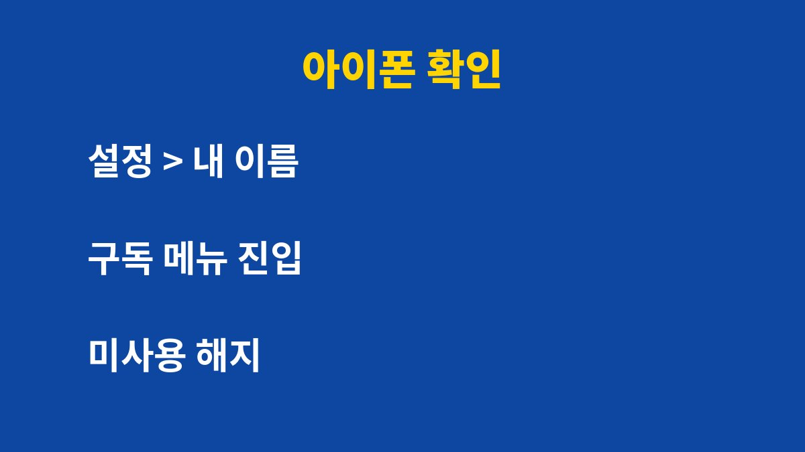
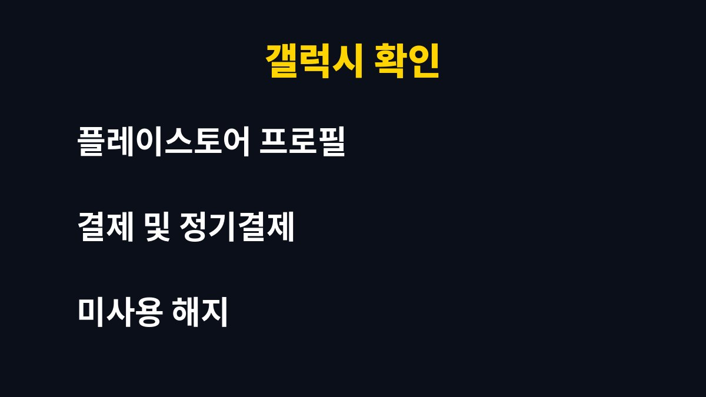

구독 결제는 3분만 점검해도 매달 새는 돈을 바로 찾아낼 수 있다. 앱스토어나 구글플레이에서 앱을 한 번이라도 결제해 본 적이 있다면 지금 확인해야 한다. 그런데 이미 해지했다고 믿고 있다면 오히려 더 위험할 수 있다. 이유는 아래에 있다.
무료 체험으로 시작한 앱은 체험 기간이 끝나면 자동으로 유료 결제로 넘어가는 경우가 많다. 문제는 결제 금액이 소액이라 카드 문자만으로는 눈에 잘 띄지 않는다는 점이다. 한 달에 몇천 원씩 나가는 구독이 서너 개만 겹쳐도 1년이면 꽤 큰 금액이 된다.
또 하나의 함정은 앱을 지워도 구독은 해지되지 않는다는 사실이다. 앱을 삭제하면 끝났다고 생각하기 쉽지만 결제는 계정에 묶여 있어서 계속 이어진다. 이 부분을 모르고 지나치는 사람이 의외로 많다.
아이폰은 설정 앱에서 맨 위의 내 이름을 누른 뒤 구독 메뉴로 들어가면 된다. 현재 활성 상태인 구독과 만료된 구독이 나뉘어 보인다. 갤럭시와 안드로이드 폰은 플레이스토어에서 오른쪽 위 프로필을 누르고 결제 및 정기 결제 메뉴로 들어가면 된다.

이동통신사 휴대폰 결제나 앱 안에서 직접 카드로 등록한 구독은 이 목록에 나타나지 않을 수 있다. 이런 경우에는 카드사 앱의 이용 내역에서 같은 금액이 매달 반복되는 항목을 찾아보는 것이 좋다.
기준은 단순하다. 최근 한 달 안에 실제로 열어 본 적이 없는 앱은 해지 후보이다. 영상, 음악, 클라우드 저장공간, 운동, 번역, AI 서비스처럼 비슷한 기능이 겹치는 구독이 있다면 하나만 남기는 것이 효율적이다.
| 상황 | 권장 조치 |
| 한 달 넘게 안 연 앱 | 즉시 해지한다. |
| 기능이 겹치는 구독 | 하나만 남기고 해지한다. |
| 무료 체험 중인 앱 | 체험 종료 전날 알림을 맞춘다. |
| 연간 결제 구독 | 갱신일을 달력에 적어 둔다. |
해지하더라도 이미 결제한 기간 동안은 서비스를 계속 쓸 수 있는 경우가 대부분이다. 그래서 해지 버튼을 누르는 것 자체가 손해는 아니다. 다시 필요해지면 언제든 재가입하면 된다.
앱스토어나 구글플레이를 쓴다면 아래 순서로 확인해 둔다.
지금 안 보면 결국 매달 돈이 새는 함정이 그대로 남는다.
흔한 실수는 무료 체험만 해 보고 해지를 잊는 것이다.
체험이 끝나는 날 자동으로 유료 결제가 시작되는 경우가 많다.
앱을 지운다고 구독이 끊기지 않는다는 점도 자주 놓친다.
카드 명세서에서 낯선 해외 결제가 보이면 어떤 구독인지 꼭 확인한다.
가족 공유 구독은 누가 결제하는지 정리해 두면 중복 결제를 막을 수 있다.
앱을 지운다고 구독이 끊기지 않는다는 점을 꼭 기억한다.
한 달에 한 번 이 순서로 확인하면 새는 돈을 꽤 막을 수 있다.
한 달에 한 번, 카드 결제일에 맞춰 확인하면 잊지 않는다.
남길 구독은 실제로 자주 쓰는지, 비슷한 서비스와 겹치지 않는지 두 가지만 보면 된다.
겹치는 서비스가 있다면 하나만 남기고 정리한다.
가족과 함께 쓰는 구독은 누가 결제하는지 정해 두면 중복 결제를 막을 수 있다.
이렇게 정리하면 매달 새는 돈이 눈에 보이기 시작한다.
정리한 결과를 메모해 두면 다음 점검이 훨씬 빨라진다.
먼저 해지 완료 화면이나 확인 메일을 캡처해 두는 것이 좋다. 그다음 스토어의 결제 내역에서 해당 건의 환불 요청 메뉴가 열려 있는지 확인한다. 환불 가능 여부는 서비스와 결제 시점에 따라 달라질 수 있으므로 공식 안내를 따라야 한다.

마지막으로 한 가지를 더 권한다. 스토어 설정에서 결제 시 인증 요구를 켜 두면 가족이나 아이가 실수로 결제하는 일도 막을 수 있다. 점검은 한 번 해 두면 몇 달은 마음이 편해진다.
이런 생활 밀착 IT 정보를 계속 받아보려면 블로그를 구독해 두는 것이 좋다.
기사·공식 발표 기준이며 출시·가격 정보는 바뀔 수 있다.